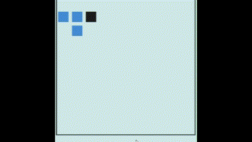

Insertion sort is a simple and intuitive sorting algorithm that builds the final sorted array one item at a time. It's particularly useful for small datasets or nearly sorted data.
Depth-first search (DFS) is an algorithm for traversing or searching tree or graph data structures1234. It starts at the root node and explores as far as possible along each branch before backtracking.
AVL tree (named after inventors Adelson-Velsky and Landis) is a self-balancing binary search tree.The AVL tree is named after its two Soviet inventors, Georgy Adelson-Velsky and Evgenii Landis.
binary search tree (BST) is a data structure with the key of each internal node being greater than all the keys in the respective node's left subtree and less than the ones in its right subtree.
Topological sort of a directed graph is a linear ordering of its vertices such that for every directed edge (u,v) from vertex u to vertex v, u comes before v in the ordering.
Breadth First Search (BFS) is a fundamental graph traversal algorithm. It begins with a node, then first traverses all its adjacent. Once all adjacent are visited, then their adjacent are traversed.